Esto es un sistema gestor de inventario de Minecraft (SGIM), el cual se utilizará para intentar organizar los cofres, saber dónde los tienes localizados y organizar y saber dónde está cada inventario.
El desplegable que tenemos arriba a la izquierda nos indica en qué zona de la aplicación estamos, esta tiene tres partes: Cofre, Almacena e Item.
Esta aplicación está formada por tres partes: la parte de arriba (menú), la zona izquierda (barra lateral) y la zona central (centro).
Barra Lateral
Esta barra nos permite ver la zona en la que nos ubicamos en la aplicación
en el desplegable, además de navegar entre los tres modos que hay: Cofre,
Almacena e Item. En este apartado veremos los cofres, localizaciones (Almacena)
o items creados para poder seleccionarlos por si nos hace falta editarlos o
eliminarlos. También podemos poner el cursor encima de ellos y nos muestran
información sobre ellos.
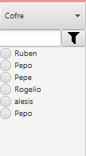
Centro
En esta zona tendremos visualmente los cofres, lugares o items creados.
Si nos encontramos en la zona Cofre, veremos todos los tipos de cofre que
hay y al darle a uno de ellos nos mostrará los lugares en los que se encuentran
todos esos tipos de cofre. En caso de que no existan, no aparecerá nada. Si hay
lugares, podemos ver los items que hay en dicho cofre, en los cuales, poniendo
el cursor encima, nos da más información sobre ellos.
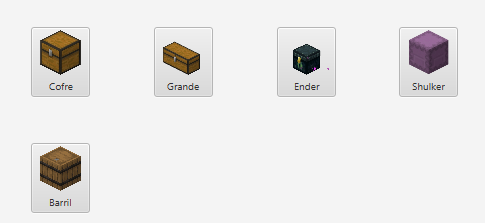
Agregar cofre y editar cofre
Agregar cofre
-Para poder agregar un cofre debemos completar los siguientes campos:
-Nombre: Colocar un nombre de entre 1 y 50 caracteres
-Tipo: Seleccionar el tipo de cofre que agregaremos
-Capacidad: Este indica el espacio del cofre, en este caso solo puede ser entre 1 y 120
-X/Y/Z: Estas serian las posiciones de donde se situa un cofre
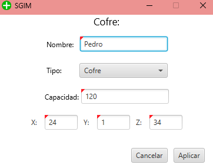
En caso de que no completemos los campos nos saldra un error
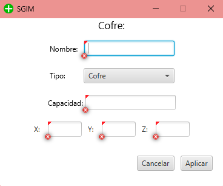
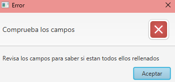
Si queremos agregar un cofre en un sitio que ya existe nos suelta otro error distinto
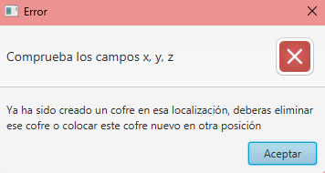
Editar cofre
Para poder editar un cofre tendremos que seleccionar uno de los cofres que tenemos a la izquierda y se activara el boton de editar al cual le daremos para editar dicho cofre
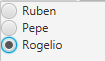

En caso de que de dejemos un hueco en blanco, daria un error

Editar Almacena
En caso de que querramos editar la posicion de un cofre tendremos que acceder al tipo de cofre, seleccionar la posicion que deseemos editar y se activara el boton de edita para editarlo

En caso de que queramos edita una posicion no podriamo poneer una posicion existente ademas de no poder dejar los huecos en blanco, porque si no daria un fallo
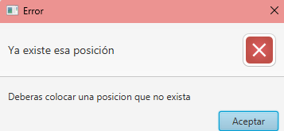
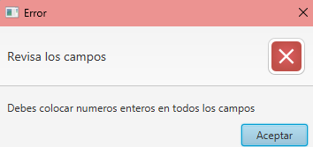
Agregar y editar items
Agregar item
Si queremos agregar un item dbemos crear anteriormente un cofre y ubicarnos en la ventana de items, una vez dentro le daremos al boton agregar y deberemos completa los campos
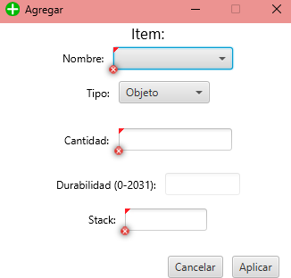
Si dejamos los huecos vacios nos slatara un error
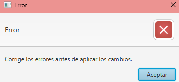
Para ello deberiamos escoger el nombre de item con su tipo correspondiente y en caso de que sea objeto pondremos una cantidad que no supere la capacidad que le quede al cofre, pero tambien debemos fijarnos en el stack porque son las veces que se repita el objeto, en esta opcion estara deshabilitada la opcion de durabilidad ya que no se puede definir una durabilidad a un objeto
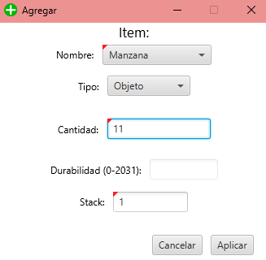
En caso de que sea una armadura o un pico deberiamos poner un numero de durabilidad nada mas haciendo que se deshabiliten las opciones de cantidad y stack ya que no se puede repetir un tipo de armadura o herramienta
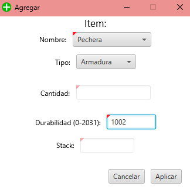
Editar item
Para poder editar un item deberiamos seleccionar en la barra lateral izquierda la opcion que deseemos editar activandose de esa manera el boton de editar al cual le daremos
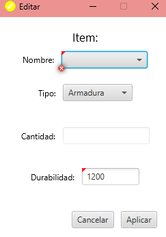
En este caso es igual que añadir item pero no aparece la opcion de stack ya que te estas refiriendo a un hueco en especifico del cofre
Eliminar
Para poder eliminar un codre, una posicion o un item deberemos seleccionar el objeto que tengamos en la barra lateral de la izquierda que queramos eliminar, de esa manera se activará el boton eliminar al cual le daremos, al darle nos saldrá una ventana emergente como metodo de seguridad pra saber si desea eliminarlo
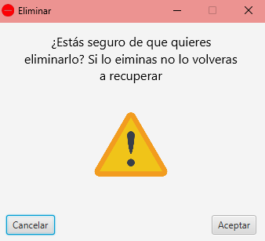